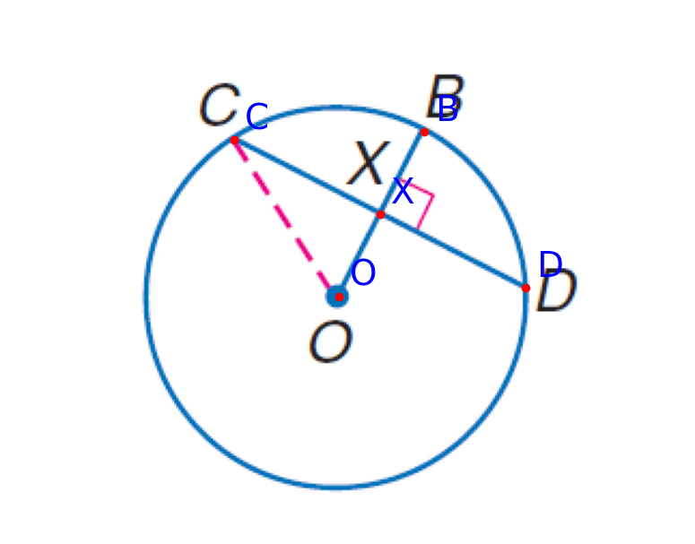
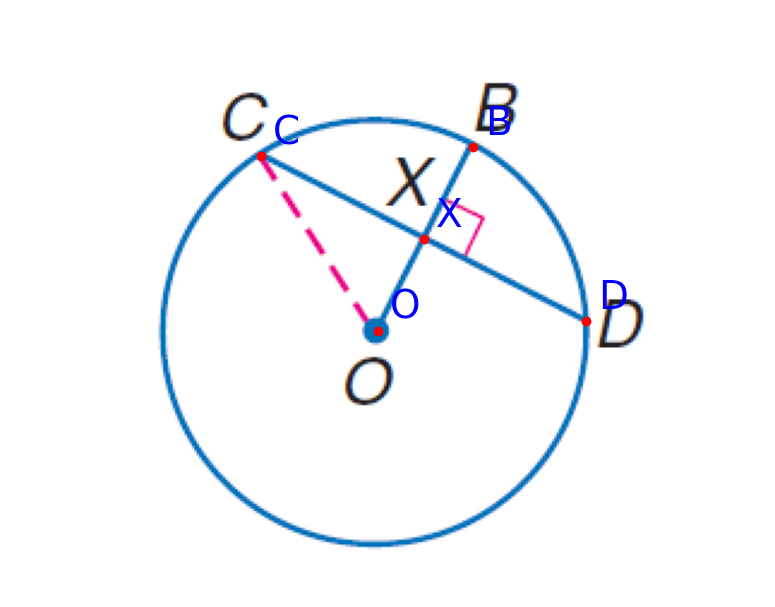
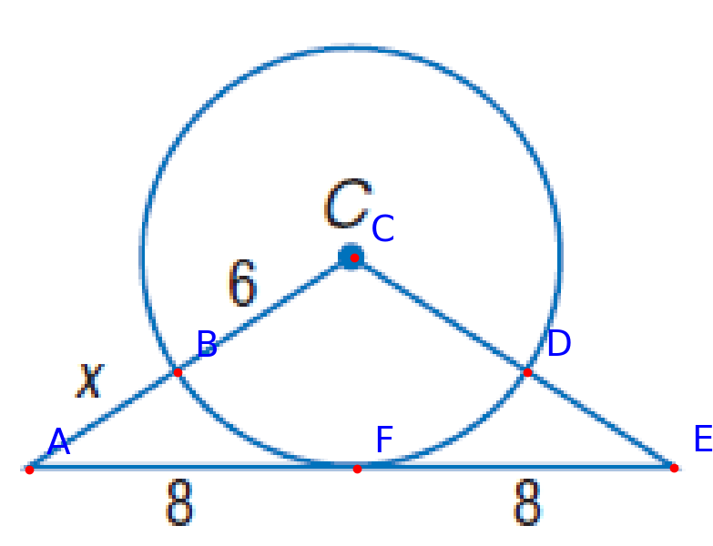
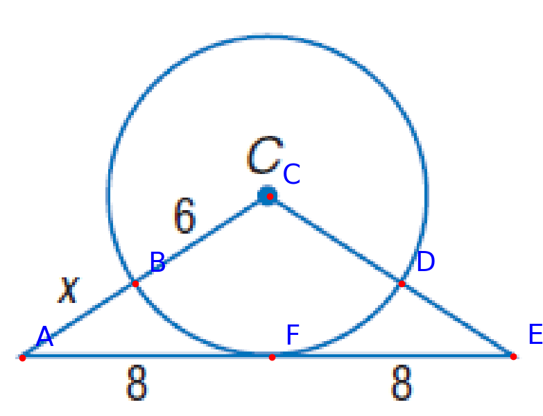
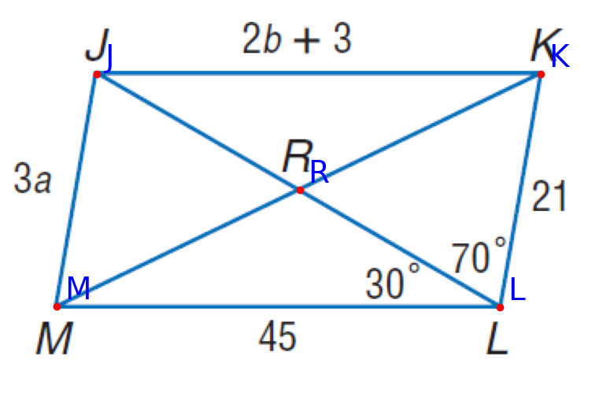
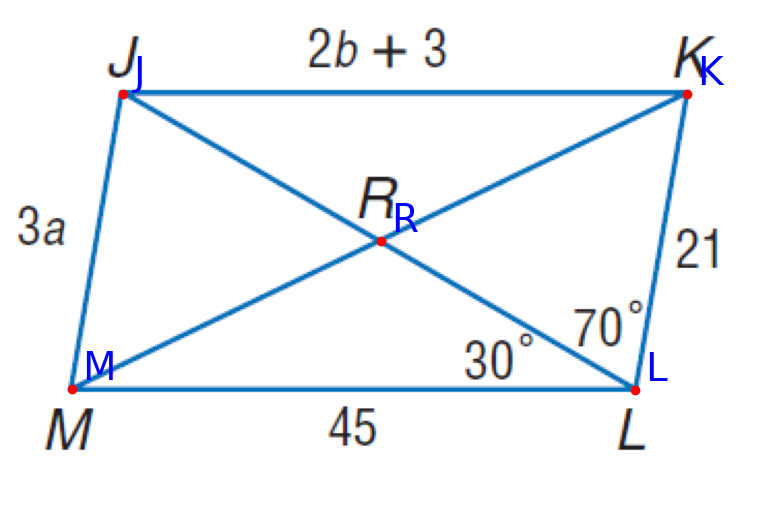
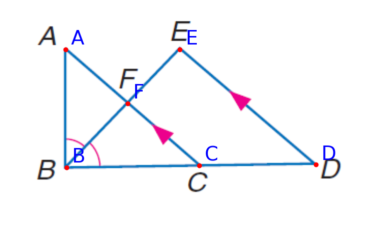
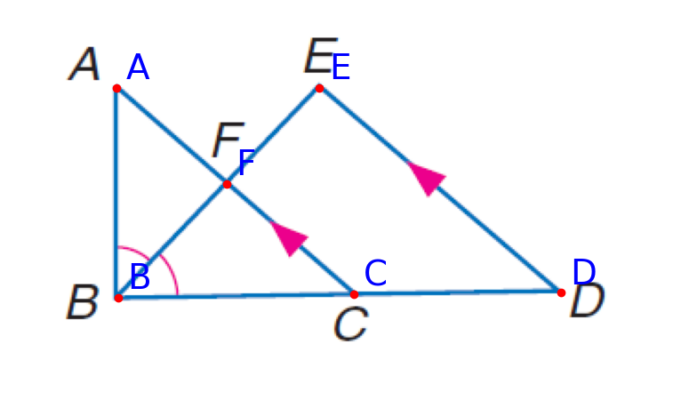
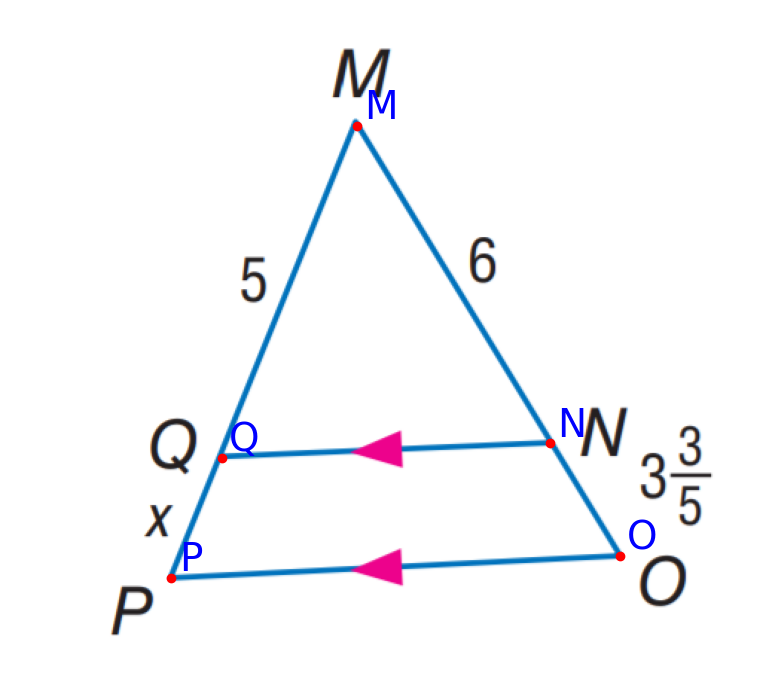
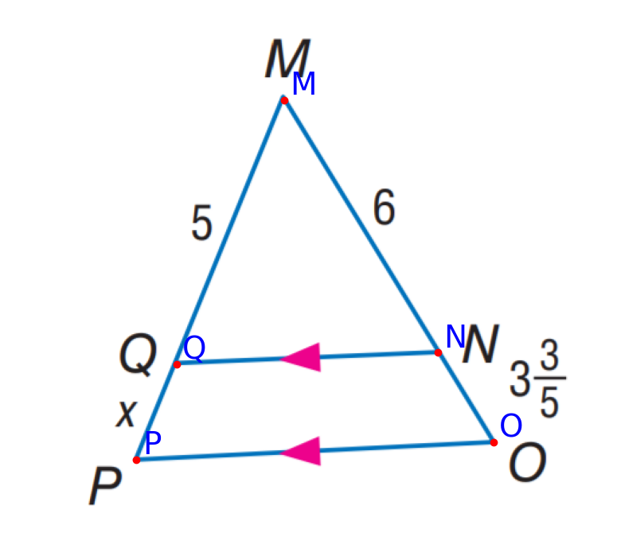

Geometric problem solving presents distinctive challenges in artificial intelligence,
requiring not only robust multimodal comprehension but also exceptional mathematical reasoning capabilities.
Current methodologies exhibit deficiencies in processing multimodal information while being constrained
by limited interpretability and reliability in their reasoning processes.
To address these challenges, we propose AutoGPS,
a neuro-symbolic framework that synergistically integrates the multimodal understanding strengths of neural
methods with the rigorous reasoning capabilities of symbolic systems for automated geometric reasoning.
Specifically, AutoGPS employs a multimodal formalization framework to systematically
translate geometry problems described through textual and visual modalities into structured formal language
representations.
This is followed by deductive symbolic reasoning operations that execute mathematically
verifiable derivations,
yielding human-readable solving procedures.
Extensive experimental evaluations demonstrate that our method establishes new state-of-the-art performance
on benchmark datasets (Geometry3K and PGPS9K),
while significantly enhancing interpretability through verifiable proof generation.
Furthermore, leveraging enhanced interpretability and deductive rigor,
we identified and rectified inherent inconsistencies within the Geometry3K dataset.
 

 


 

 


 
